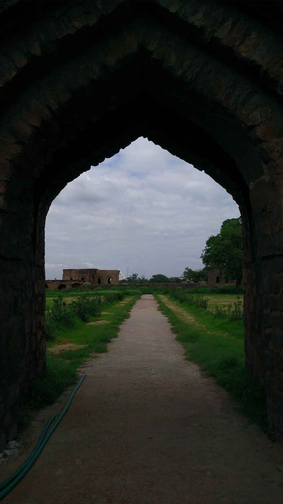

<html></html>
<head>
  <link rel="stylesheet" href="dist/assets/styles/delhi.css"/>
  <link rel="stylesheet" href="dist/assets/styles/main.css"/>
  <link href="https://fonts.googleapis.com/css?family=Roboto+Slab|Josefin+Sans" rel="stylesheet" type="text/css"/>
  <title>Delhi</title>
</head>
<body>
  <section class="delhi clear">
    <div class="content">
      <h2>New Delhi
        <p><a href="souvenirs.html">Back</a></p>
      </h2>
    </div>
    <p>
      <br>
      From Pandavas's Indraprastha to Lutyens's Delhi, the nature of each city that is contained within, is significantly different from one another.
      <br>
      The educational tour of Rajasthan conducted by The Rovers under the T.L.D. Programme concluded with a stopover in the Capital City for a day and a half.
      <br>
      
      
    </p>
    <p>
      <br>
      From history to politics, this city has been significantly prominent throughout most periods of development of the country almost in every field, architecture being one of the various.
      <br>
      The purpose of the stopover at the Capital further narrows down to how the city has modified itself over the course of history to be home to so many cultures, thus owing the reason of its rich heritage and architectural magnificence to it.
      "Architecture belongs to culture, not civilization", said Alvar Aalto.
      <br>
      
    </p>
    <p>
      The afore mentioned quote perhaps answers every question as to why is the city so significantly unique in terms of architecture. Where it is common for a city to have developed with changing times, New Delhi has not only coped up with urbanisation but also with a dynamic change in its culture practice.
      <br>
      This city is believed to be every architecture student's dream. And hence one would simply not believe how this city could put a conclusion to a journey which covered three-fourth of Rajasthan which has already overwhelmed them. Rather, it is of major disbelief and considered to be injustice to have spent such little time in the Capital. But every little detail in the itinerary had its own purpose.
      <br>
      New Delhi had its own way of bringing the essence of realisation to some very creative and aspiring architects. Delhi opened our eyes to examples of urban design, contemporary architecture, history of architecture and other various subjects we study in due course of college. What was beautiful though, was how significant the city held up to be for each one even in the little time that was spent there.
      
      
    </p>
    <p>
      The city in its greens, in its historical marvels coved in concrete and glass was lost in translation with something so beautiful to learn from it.
      New Delhi is a perfect example of how evolution takes place. How we adapt to survive.
      <br>
    </p>
    <p>
      Delhi successfully maintains every piece of treasure it holds within. Not simply by the act of conservation of a monument, but by maintaining the fusion of urban life with our history.
      <br>
      In Delhi, it's almost regular to spot a monument or at least its ruins For a tourist or a visitor, it might almost be astonishing as to how the city functions like this, without providing enough attention to all the artifacts for these exquisite sites have not been entirely segregated, rather the modern city has organically developed around it. The presence of these structures in harmony with the modern upcoming buildings is much like the appendix in the human body. It's serves as a reminder of where one belongs from, for one to not lose touch of its roots, even with the exponentially increasing rate of urbanisation.
      <br>
      As young and aspiring architects, it is of primary importance for us to learn and travel and seek knowledge, but also to remember where we belong from, the most important lesson that the capital city of New Delhi is an example of.
      Summing it up, Delhi is a tree which keeps on growing, keeping its roots deep in the ground for it will touch all the heights in the sky but never detach itself from its true origins
      
    </p><p style="text-align:right">-Author</p><a href="index.html">
      <button>back to home</button></a>
  </section>
  <section id="footer" class="footer clear">
    <center>
      <div class="content clear">
        <div class="content-1">
          <p><span>WALK</span> <br> 4B/28, 2nd Floor, Tilak Nagar, New Delhi, Delhi 110018.
            <!--a(href='support.html') read more &#10140;-->
          </p>
        </div>
        <div class="content-2">
          <div class="content-2-1">
            <p><span>TALK</span><br> the.rovers@outlook.com</p>
          </div>
          <div class="content-2-2">
            <p><span>STALK</span>
              <ul id="social_icons">
                <li><a href="https://facebook.com/rover.org"></a></li>
                <li><a href="https://www.youtube.com/channel/UCAH9TX_LhImPk9YEKKjf26A"></a></li>
                <li><a href="https://instagram.com/the.rovers"></a></li>
                <li><a href="https://twitter.com/rovers_org"></a></li>
                <li><a href="https://plus.google.com/u/0/b/100252120756478981295/100252120756478981295/about"></a></li>
                <li><a href="http://issuu.com/therovers"></a></li>
              </ul>
            </p>
          </div>
        </div>
      </div>
      <p class="rightpara">copyrights@2015 rovers.org.in</p>
    </center>
  </section>
</body>